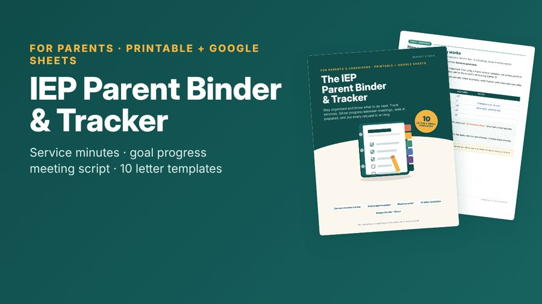

How to Track IEP Service Minutes (and What to Do About Missed Sessions)
Find the minutes your child's IEP promises, keep a simple log and compare each month.
An IEP lists services such as speech therapy, occupational therapy or specialized instruction, usually with a number of minutes per week or month. Parents often find out months later that sessions were cancelled for testing weeks, staff absences or field trips. Keeping your own simple log is the easiest way to know what is happening. This is an organizing guide for US parents, not legal advice.
Step 1: Find the promised minutes
Open the services page of the IEP (often called the service grid or service delivery page). For each service, write down:
- The service (for example, speech-language therapy)
- Minutes and frequency (for example, 30 minutes, twice a week)
- Where it happens (in class or in a separate room) and whether it is individual or group
- Start and end dates
Turn each one into a monthly total. 30 minutes twice a week is about 240 minutes in a four-week month.
Step 2: Ask how sessions are recorded
Send a friendly email to the case manager: "Could you tell me how service sessions are logged, and could I get a copy of the service logs each month?" Many providers already keep logs. Asking early, before there is a problem, keeps the tone cooperative.
Step 3: Keep your own log
One line per session is enough:
- Date
- Service
- Minutes delivered
- Delivered, missed or made up
- Reason if missed (provider absent, child absent, school event)
Your sources are the provider's logs, notes home, and your child ("Did you see Ms. Lee today?"). A weekly five-minute update is plenty.
Step 4: Compare each month
At the end of the month, add up the delivered minutes for each service and compare the total with the promised minutes. A session missed because your child was absent is often treated differently from one missed because the provider was unavailable, so keep the reason. Policies on make-up sessions differ by state and district.
Step 5: If minutes are short
- Ask first, in writing. "My notes show about 150 of 240 speech minutes in October. Could you check your logs and let me know how the missed sessions will be made up?"
- Keep the reply in your communication log.
- If it continues, ask for an IEP team meeting to discuss it, and bring your monthly totals.
- For questions about your rights, contact your state's Parent Training and Information Center. It is free for parents.
Why a written log helps
A written log turns "I feel like she's missing a lot of speech" into "she received 150 of 240 minutes in October and 180 of 240 in November". Specific numbers get a faster and friendlier answer, and most shortfalls are fixed with one email.
This is an organizing guide, not legal advice. Rules on missed services vary by state and district.
Want it done for you?
IEP Binder for Parents. Track service minutes, follow every goal and walk into IEP meetings prepared.
